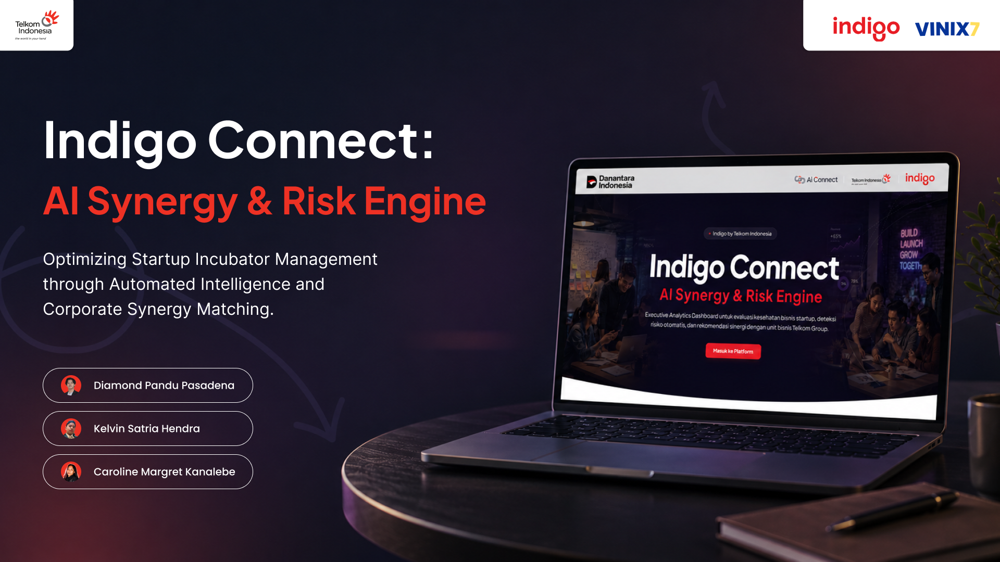

Proyek Indigo by Telkom ini berfokus pada pengembangan sistem AI Synergy & Risk Engine yang canggih. Sebagai bagian dari tim desain, tujuan utamanya adalah merancang antarmuka yang mampu menyajikan data kompleks mengenai manajemen risiko dan sinergi kecerdasan buatan menjadi dasbor yang intuitif, informatif, dan mudah digunakan oleh para pemangku kepentingan.
Mengelola densitas data analitik yang tinggi tanpa mengorbankan kejernihan visual (visual clarity). Diperlukan arsitektur informasi yang solid agar metrik risiko utama dapat segera dipahami sekilas (glanceable), sambil tetap memberikan kedalaman informasi bagi pengguna yang ingin menggali data lebih dalam.
Menerapkan pendekatan desain dashboard modular dengan hierarki visual yang kuat. Menggunakan palet warna yang memiliki kontras tepat untuk menunjukkan status risiko (misalnya merah untuk risiko tinggi, hijau untuk stabil). Proses pengujian iteratif dilakukan untuk memastikan navigasi dan visualisasi data yang *user-friendly*.